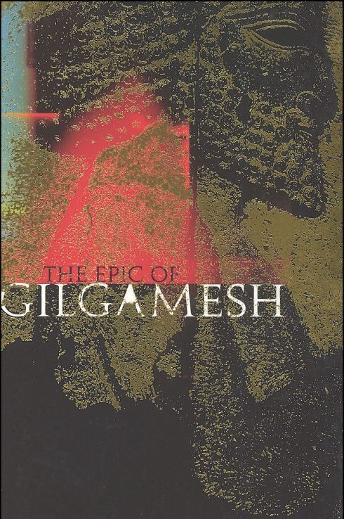
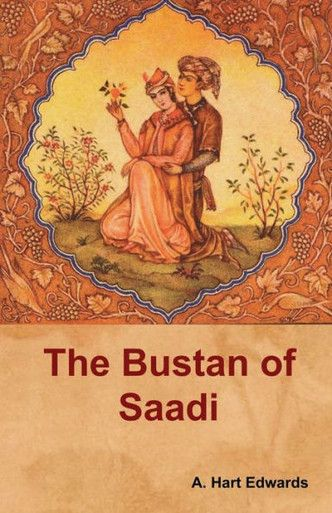
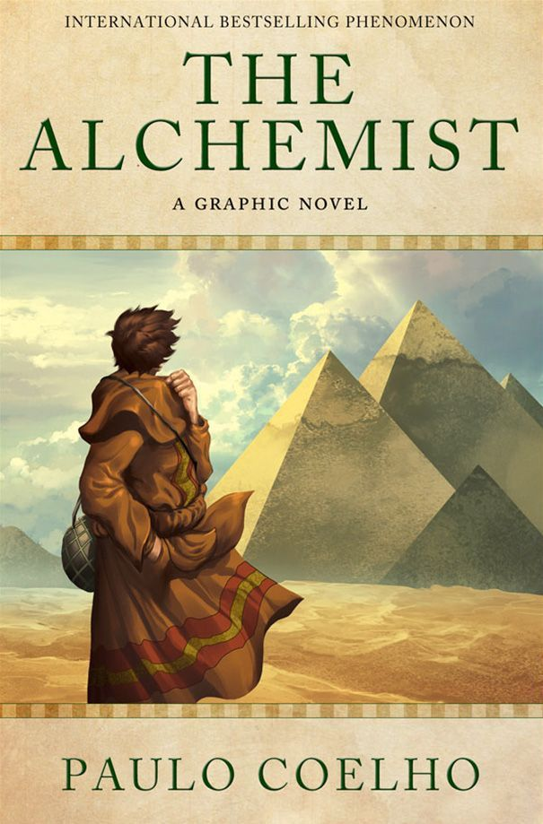

Beyond philosophy's arguments lies literature's imagination — the
epics, novels, and tales that carry a civilization's values, fears,
and dreams. Explore the stories that have moved humanity for thousands
of years.
Why Read Literature?
Philosophy asks some of humanity's deepest questions through argument,
reason, and critical inquiry, while literature explores many of those
same questions through story, character, imagination, and lived
experience. A character's grief can become an exploration of suffering
and mortality; a wanderer's journey can raise questions about identity,
freedom, and the meaning of life; and the rise or fall of a society can
reveal enduring questions about power, justice, morality, and human
nature. In this sense, literature and philosophy are closely connected:
both attempt to make sense of the human condition, although they often
approach it through different forms of expression. From ancient epics
and religious texts to tragedy, poetry, novels, and modern fiction,
writers across cultures have used literature to preserve ideas,
challenge assumptions, question established values, and explore what it
means to be human. The literary traditions of different civilizations
also provide an important historical context for understanding the
development of philosophical thought, revealing how ideas about
morality, society, knowledge, existence, and human purpose have been
expressed through different cultures and periods.
Reading widely across cultures and centuries doesn't just entertain — it
builds empathy, reveals how differently people have lived and believed,
and preserves the imagination of civilizations long past. This
collection gathers the works that have shaped how humanity tells its own
story.
🏺 Ancient Epics & Myth
Long before the novel existed, epics carried a people's history, gods,
and warnings — recited aloud, passed down, and eventually written into
some of the oldest stories we still read today.

Beginner
The Epic of Gilgamesh
Anonymous (Ancient Mesopotamia)
The oldest surviving epic in the world, following a king's search
for meaning, friendship, and immortality.
This medieval chanson de geste recounts the legendary deeds of
Frankish warrior Roland at the Battle of Roncevaux Pass during
Charlemagne's campaign in Spain. It explores themes of loyalty,
honor, and heroic sacrifice.
An ancient Greek epic poem set during the final weeks of the
ten-year Trojan War, following the devastating anger of Achilles.
It explores themes of glory, fate, and wrath through fierce combat
and divine intervention.
Various Authors; translated by Henry Adams Bellows
A collection of Old Norse poems, largely anonymous, containing
mythological tales and heroic legends. A foundational source for
Norse mythology, it profoundly influenced Scandinavian literature
and beyond.
Hesiod's epic poem describing the origins and genealogies of the
Greek gods, from primordial Chaos to the establishment of Zeus's
rule. A foundational text for understanding Greek mythology and
cosmology.
As civilizations matured, storytelling grew more personal and structured
— moral tales, framed narratives, and the first long-form poetic
journeys through sin, love, and redemption.

Intermediate
The Bustan
Saadi (Sadi)
A classic collection of poems entwined with moral lessons,
featuring philosophical treatises and poetic narratives on ethical
teachings, justice, benevolence, love, humility, and resignation,
guiding readers to self-understanding.
A vast collection of Middle Eastern and South Asian stories and
folk tales compiled in Arabic, framed by the story of Scheherazade
and King Shahryar. It includes famous tales of Aladdin, Ali Baba,
and Sinbad.
📅 c. 9th - 12th Century CE (compiled)🏛 Middle Eastern/South Asian
An ancient Indian collection of interrelated animal fables in
Sanskrit verse and prose, arranged within a frame story. It
teaches 'nīti' or the wise conduct of life through moral lessons.
A seminal work of English literature, this collection of stories
is told by a group of pilgrims traveling to Canterbury. It offers
a vivid cross-section of medieval society, intertwining themes of
morality, satire, and human nature through diverse tales.
A Latin epic poem by Virgil, chronicling the legendary story of
Aeneas, a Trojan hero who journeys to Italy after the fall of
Troy, destined to become the ancestor of the Romans. It blends
myth, history, and explores themes of fate, piety, and the
founding of Rome.
A 16th-century Chinese novel recounting the legendary pilgrimage
of the Buddhist monk Xuanzang to India, accompanied by his
supernatural disciples. It blends mythology, folk tales,
adventure, and spiritual allegory.
An early social novel depicting the harsh realities of
19th-century London, following orphan Oliver Twist's escape from a
workhouse into a gang of pickpockets, exposing the cruel treatment
of children and the sordid criminal underworld.
A historical novel set in London and Paris before and during the
French Revolution, depicting the plight of the French peasantry,
the brutality of the aristocracy, and the revolutionary fury. It's
one of Dickens's most famous and dramatic works.
A historical adventure novel set in 17th-century France, following
the young Gascon d'Artagnan as he journeys to Paris to join the
King's Musketeers, befriending the legendary Athos, Porthos, and
Aramis, and becoming embroiled in court intrigues and dangerous
affairs of state.
A passionate philosophical novel set in 19th-century Russia,
exploring profound questions of God, free will, and morality
through the tumultuous lives of the Karamazov family, with
patricide at the heart of its dramatic plot.
A satirical novel following Pavel Ivanovich Chichikov's scheme to
buy "dead souls" (deceased serfs still on paper). It brilliantly
exposes the moral decay, greed, and social dysfunction of
19th-century Russian provincial life.
A French epic historical novel exploring themes of justice,
poverty, and love through the struggles of ex-convict Jean Valjean
in 19th-century France, culminating in the 1832 June Rebellion.
An epic Hindi novel exploring the socio-economic deprivation and
exploitation of village poor in 1930s rural North India. It
follows the story of Hori Mahato, a poor farmer whose lifelong
dream is to own a cow, symbolizing wealth and religious merit. The
narrative delves into themes of debt, the hypocrisy of religious
institutions, rigid social hierarchies, and the contrast between
rural struggles and urban life, leading to Hori's tragic struggle
to maintain his social dignity amidst constant exploitation.
A Southern Gothic novel set in the fictional town of Maycomb,
Alabama, during the Great Depression. It explores themes of racial
injustice, the destruction of innocence, and the complexities of
morality through the eyes of young Jean Louise "Scout" Finch as
her lawyer father, Atticus Finch, defends a black man falsely
accused of rape.
An American realist novel depicting the struggles of the Joad
family, a poor tenant farming family from Oklahoma, who are forced
to migrate to California during the Great Depression's Dust Bowl.
It explores themes of poverty, social injustice, human dignity,
and the American dream, portraying their desperate search for work
and a better life amidst exploitation and hardship.
A visionary novel exploring themes of guilt, bureaucracy, and
alienation. Josef K., a bank official, is arrested one morning by
an inaccessible authority for an unspecified crime. He attempts to
navigate a confusing and oppressive legal system that operates
beyond logic, leading to his eventual downfall. The novel, left
unfinished by Kafka and published posthumously, is a profound
commentary on the individual's struggle against unreasoning power.
A poignant novel set in Kerala, India, in 1969, and 1993,
following the lives of fraternal twins Rahel and Estha. It
explores how small events and forbidden relationships can lead to
devastating consequences, delving into themes of love, family, the
caste system, and political upheaval amidst the lush, complex
backdrop of a changing India.
A magic realist novel chronicling India's transition from British
colonial rule to independence and the subsequent partition. It
tells the story of Saleem Sinai, born at the stroke of midnight on
August 15, 1947, precisely at the moment India gains independence.
Saleem, like 1,000 other children born in that hour, is endowed
with special powers, and his life is inextricably linked to the
fate of the nation.
A sweeping saga spanning four generations of the Trueba family in
an unnamed Latin American country (strongly implied to be Chile).
Blending magical realism with political and historical narrative,
it tells a tale of love, family, tragedy, and political upheaval,
featuring clairvoyant women, a powerful patriarch, and the
country's turbulent journey through the 20th century.
A short heroic novel about Santiago, an aging Cuban fisherman who,
after 84 days without a catch, ventures far into the Gulf Stream
to battle a giant marlin. The novella explores themes of human
endurance, man's relationship with nature, defeat, and the dignity
of struggle, earning Hemingway the Pulitzer Prize for Fiction in
1953 and contributing to his Nobel Prize in Literature in 1954.
Short, potent works that have changed how millions of readers think
about purpose, presence, and how to actually live — philosophy in the
form of parable rather than argument.

Beginner
The Alchemist
Paulo Coelho
A shepherd's journey across the desert in search of treasure, and
the deeper truth he finds about listening to his own heart.
Every culture tells its own kind of story. Explore how different regions
of the world have shaped, and been shaped by, their literary traditions.
🇷🇺
Russia
Sweeping psychological novels from Tolstoy, Dostoevsky, and Chekhov,
wrestling with faith, guilt, and society.
🌎
Latin America
Magical realism from García Márquez, Borges, and Allende, blending
myth with political and personal history.
🌍
Africa
Oral storytelling traditions and modern voices like Achebe and
Adichie, exploring colonialism, identity, and home.
🇯🇵
Japan
From Murasaki Shikibu to Murakami — stillness, impermanence, and
quiet emotional precision.
🌙
Middle East
From the Arabian Nights to modern Arabic and Persian fiction, rich
in frame narrative and poetic language.
🪷
South Asia
Epics like the Ramayana and Mahabharata alongside modern novelists
exploring partition, caste, and diaspora.
Stories We Keep Telling
Across every culture and century, certain patterns keep appearing —
because they capture something true about being human.
🗺 The Hero's Journey — a call to adventure, trials, and return
transformed
🏠 Exile and Return — displacement, longing, and the meaning of home
🌱 Coming of Age — the loss of innocence and the search for identity
⚔ War and Its Cost — glory, trauma, and what survives it
💔 Love and Sacrifice — devotion tested against duty, distance, or
death
🔍 The Search for Meaning — characters confronting a world that
refuses easy answers
📖 Book of the Month
This month's recommendation is The Odyssey, Homer's
epic of a hero's long, winding journey home — one of the oldest stories
still capable of moving readers today.
The Odyssey
Homer
Ten years of monsters, temptation, cunning, and loss — and
underneath it all, a simple longing to get home.
Five works that, between them, cover almost every reason to love
literature — myth, romance, tragedy, rebellion, and hope.
🏆 The Odyssey
The original journey story, and still one of the best.
🏆 One Hundred Years of Solitude
Where myth and history blur into something unforgettable.
🏆 Crime and Punishment
A masterclass in guilt, psychology, and moral tension.
🏆 Things Fall Apart
A quiet, devastating portrait of a world in collision.
🏆 Pride and Prejudice
Proof that wit and heart age better than almost anything.
Why Literature Matters
Philosophy asks us to reason our way toward truth. Literature asks us to
feel our way there instead — to sit inside another person's grief, joy,
or moral struggle long enough to understand it from within, not just
observe it from outside.
That's why the world's great stories endure long after the societies
that produced them have changed beyond recognition. A reader today can
still recognize Achilles' rage, Elizabeth Bennet's stubbornness, or
Okonkwo's fear of weakness — because the questions these characters
wrestle with never really stopped being ours.
Quote of the Page
"It was the best of times, it was the worst of times."